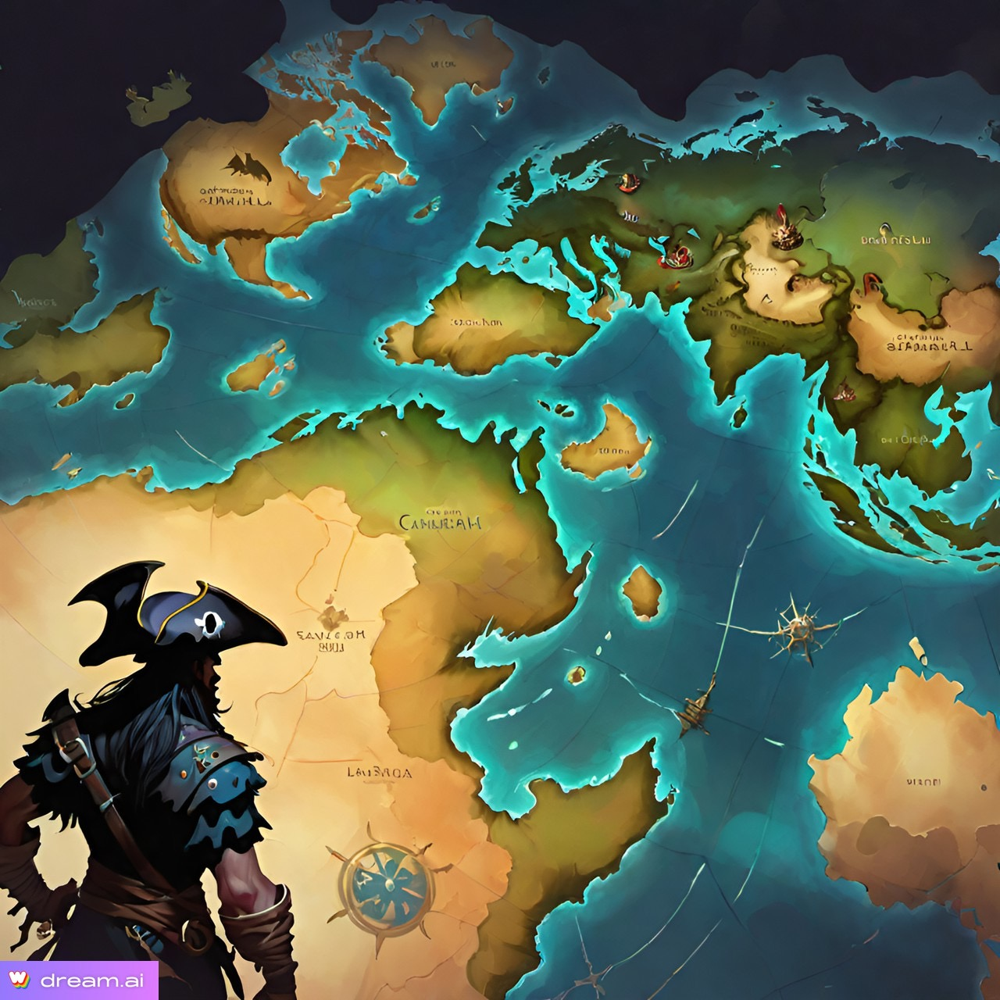
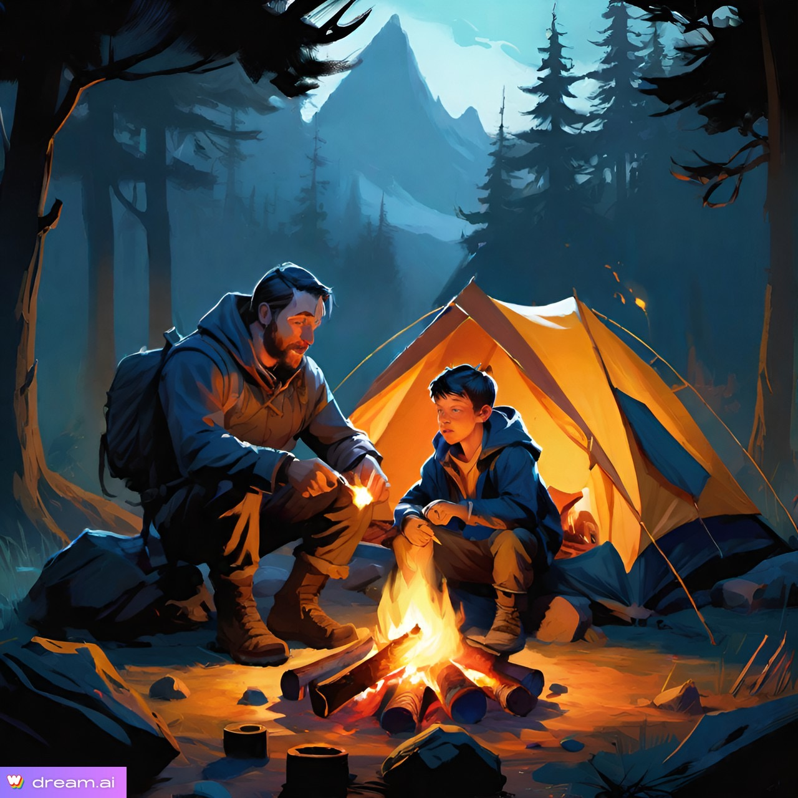
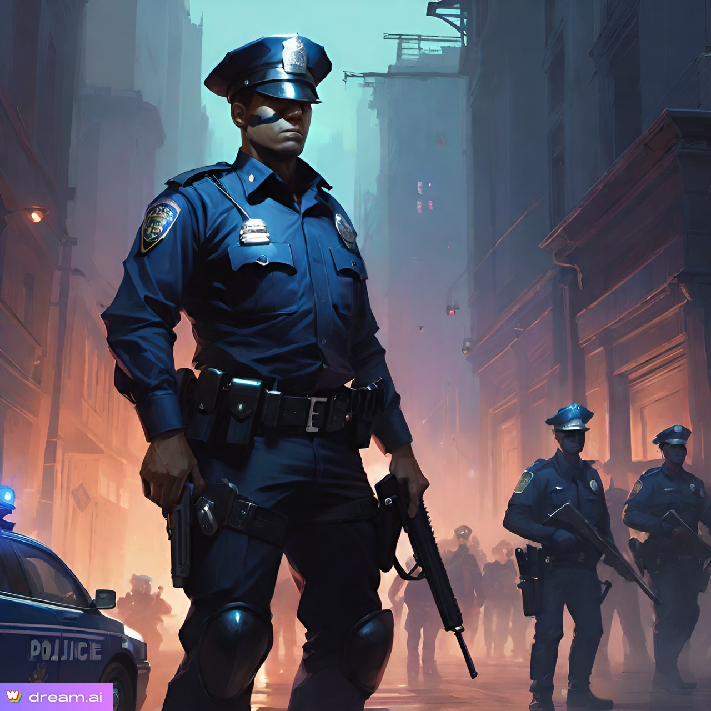
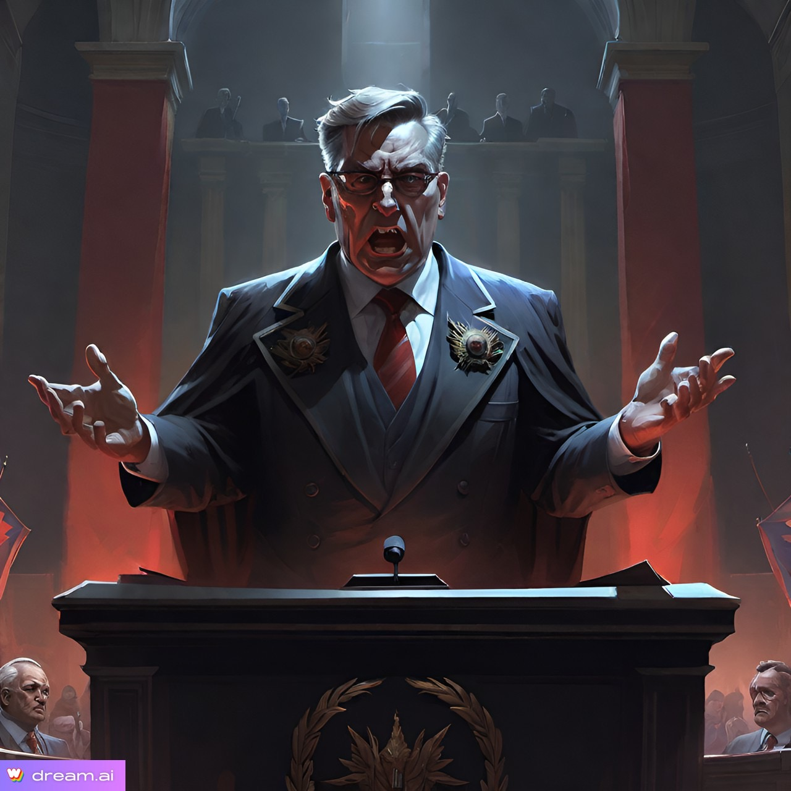
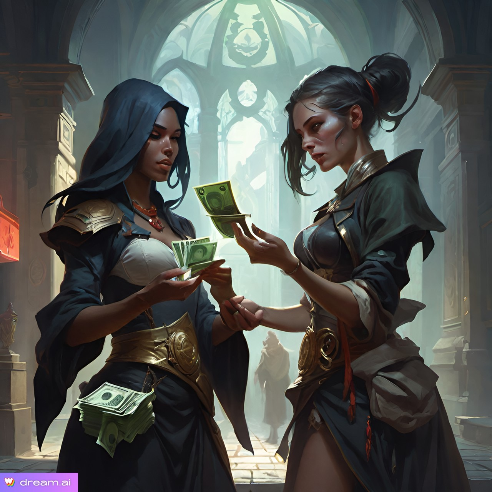

Types
CharactersIn the vast tapestry of worldbuilding, characters are the vibrant threads that weave together the intricate fabric of fictional realms. They are the storytellers and explorers, guiding audiences through the nuances and wonders of imagined worlds. With their experiences, conflicts, and interactions, characters humanize the setting, infusing it with relatability and depth. From cultural ambassadors to agents of change, characters embody the essence of their worlds, offering insights into their cultures, beliefs, and dynamics. Through their diverse backgrounds and personal journeys, characters foster empathy and connection, drawing audiences into the heart of the narrative. With agency and impact, they navigate the landscapes of their worlds, shaping their destinies and leaving an indelible mark on the tapestry of existence. In essence, characters are the soul of worldbuilding, breathing life and meaning into the vast expanses of imagination. |
|
|---|---|
TechnologyIn the intricate tapestry of worldbuilding, technology serves as both the warp and weft, intricately threading through every aspect of a fictional universe. It sets the stage, dictating the tone and flavor of the narrative, whether it's a futuristic utopia pulsating with advanced gadgets or a medieval realm steeped in mysticism. Technology shapes cultures, as societies adapt to its presence, weaving its influence into their customs, beliefs, and even spiritual practices. Power dynamics are molded by its distribution, with disparities in technological prowess fueling conflicts and alliances. Economies ebb and flow in response to technological advancements, as industries rise and fall, and resource scarcities or abundance dictate trade and prosperity. Yet, technology's reach extends beyond the societal and economic realms, leaving its mark on the very environment of the world, altering landscapes and ecosystems in its wake. In the hands of skilled storytellers, technology becomes a potent narrative tool, birthing conflicts, driving character development, and unlocking unexplored realms of imagination. Through its consistent depiction, it binds the fabric of the world, ensuring coherence and believability in the eyes of the audience, inviting them to journey through realms where the boundaries of possibility are limited only by the imagination. |
|
|  |
Worlds and ContinentsIn the vast tapestry of worldbuilding, the creation of diverse worlds, continents, and environments serves as the cornerstone of crafting immersive and compelling settings. These varied landscapes and cultures not only add depth and realism to the narrative but also offer a rich tapestry of opportunities for exploration and storytelling. Each world or continent becomes a canvas upon which unique cultures, traditions, and histories are painted, fostering intriguing interactions between characters and societies. From the scorching deserts of one world to the dense forests of another, these environments provide a backdrop for plot development, offering challenges, conflicts, and opportunities that drive the narrative forward. Through meticulous attention to detail, worldbuilders can evoke vivid imagery and emotional resonance, drawing readers or audiences into a world teeming with life, diversity, and wonder. |
ClimatesDiverse climates are the beating heart of any well-constructed fictional world, offering a tapestry of environmental variation that breathes life into its landscapes and cultures. From the icy expanses of polar regions to the sweltering heat of tropical jungles, each climate zone shapes the very fabric of societies, influencing everything from resource distribution to cultural norms. These environmental factors not only drive the plot through conflicts over scarce resources and territorial disputes but also serve as catalysts for character development, as individuals navigate the challenges and opportunities presented by their surroundings. Moreover, climates set the stage for mood and atmosphere, providing a backdrop of tranquility or danger that enhances the emotional resonance of the narrative. In weaving together these disparate climates, authors craft cohesive and immersive worlds that captivate audiences with their depth and realism. |

|
HistoryIn the art of worldbuilding, history serves as the indispensable cornerstone, imbuing fictional realms with depth, authenticity, and resonance. Through the lens of historical context, the present circumstances of these imagined worlds are illuminated, revealing the intricate tapestry of events that have shaped their cultures, societies, and landscapes. Much like the real world, the past casts a long shadow over the present, influencing the motivations and actions of characters and civilizations alike. By drawing inspiration from both real and imagined histories, storytellers infuse their narratives with rich layers of conflict, drama, and cultural nuance, inviting audiences to explore themes of power, identity, and morality within these intricately crafted settings. Ultimately, it is through the lens of history that the worlds of fiction come alive, resonating with readers and audiences through their vivid authenticity and immersive storytelling. |
Local GeographyIn the intricate tapestry of worldbuilding, the significance of local geography cannot be overstated, functioning as the cornerstone upon which entire realms are erected. Embracing a bottom-up approach, we embark on a journey that commences with the minute details of terrain and landscape, gradually unfurling to encompass broader vistas and intricate societies. At its core, local geography serves as both architect and muse, shaping the very essence of civilizations that grace its contours. From the verdant embrace of forests to the rugged embrace of mountains, each locale bequeaths its inhabitants with a unique identity and ethos, interwoven with the land they call home. Resource distribution dances to the tune of geographical features, birthing economies, and trade routes that sculpt the tapestry of commerce and power. Conflict and camaraderie alike find their genesis in the natural boundaries and strategic positions that define territories. Characters, too, are shaped by the land that cradles them, their beliefs, skills, and aspirations molded by the rhythm of the earth beneath their feet. Yet, amidst this grand tableau, lie the trials and tribulations of environmental challenges, from the capricious whims of weather to the stoic permanence of geological forces, serving as crucibles for resilience and ingenuity. Thus, in the symphony of creation, local geography emerges as both a canvas and a catalyst, inviting us to craft worlds that are as vibrant and dynamic as the landscapes from which they spring. |
|
|---|---|
CultureIn the intricate tapestry of worldbuilding, culture stands as the foundational thread upon which societies are woven. It forms the bedrock of beliefs, values, and customs that shape interactions among inhabitants and define the essence of civilizations. From the clash of differing ideologies to the harmonious convergence of shared traditions, cultural dynamics breathe life into the narrative landscape. Each distinct culture, with its unique practices and perspectives, adds depth and diversity to the world, infusing it with a vibrant richness. Characters, too, find their roots embedded in the soil of culture, their beliefs and behaviors springing forth from the deep well of their societal upbringing. Moreover, culture acts as a guiding force in environmental adaptation, shaping how societies interact with their surroundings and fostering a sense of cohesion and continuity throughout the ages. In the grand tapestry of worldbuilding, culture serves as both the warp and weft, intertwining myriad threads of story and setting into a cohesive and immersive whole. |
 |

|
Social StructureIn the meticulous craft of bottom-up worldbuilding, the intricate weave of social structure forms the very bedrock upon which entire civilizations rise and fall. Each nuanced layer, from the humblest peasant to the loftiest monarch, contributes to the rich tapestry of societal dynamics. Realism and depth flourish as these structures mirror the complexities of our own world, embedding cultural norms and traditions deeply into the fabric of the narrative. Within these strata lie the seeds of conflict and tension, driving the evolution of characters and plotlines alike. Characters, in turn, emerge as products of their social milieu, their journeys shaped by the constraints and opportunities afforded by their place within the hierarchy. Yet beyond mere individual narratives, the economic and political landscapes are sculpted by these hierarchical arrangements, dictating the flow of wealth, power, and governance. Amidst it all, the prospect of social mobility—or its absence—casts a profound shadow, influencing the very essence of societal progression. Thus, in the symphony of worldbuilding, the melody of social structure resonates as a fundamental note, guiding the composition of immersive and believable fictional realms. |
GovernmentWhen constructing a world from the bottom up, the role of government emerges as a pivotal force shaping the fabric of society. It establishes order and stability, ensuring the smooth functioning of communities and regulating interactions between them. Moreover, government dictates resource allocation, determining who has access to essentials like food, water, and technology. Through the provision of social services, such as education and healthcare, governments directly impact the well-being and development of their citizens. Legal systems, reflective of cultural values and power dynamics, govern behavior and resolve disputes. Government structures, whether democratic or authoritarian, dictate representation and governance, influencing the distribution of power and the political landscape. They also mold societal identity and culture, promoting ideologies and traditions. Interactions between governments drive international relations and conflicts, adding depth and complexity to worldbuilding endeavors. Thus, in constructing a world from its grassroots, the government emerges as a cornerstone, shaping every aspect of society and providing a framework for its existence. |
 |
|  |
PoliticsIn the meticulous art of bottom-up worldbuilding, politics emerges as a cornerstone, weaving intricate layers of society from the ground up. At its core, politics molds the intricate tapestry of interpersonal relationships and power dynamics within communities, shaping the very essence of societal structures. From the bustling streets of a humble village to the corridors of power in grandiose capitals, political nuances dictate the ebb and flow of daily life. Zooming outwards, political frameworks sculpt the broader landscape of nations and civilizations, delineating the contours of governance, laws, and societal norms. These systems serve not only as conduits for storytelling richness but also as mirrors reflecting the complex interplay between individuals, ideologies, and the relentless march of time. In the realm of speculative fiction, political conflicts and alliances become the fertile soil from which narratives bloom, offering fertile ground for exploration of power struggles, revolutions, and the intricate dance of diplomacy. Thus, politics stands not merely as a backdrop but as a dynamic force that breathes life into the very heart of a meticulously crafted world. |
CommerceIn the intricate tapestry of world-building, commerce serves as a foundational thread, weaving through the fabric of society with profound implications for every aspect of life. Adopting a bottom-up approach, one must recognize commerce's pivotal role in shaping economies, social structures, and cultural exchange. From bustling marketplaces to far-reaching trade routes, the flow of goods and currency underpins the economic foundations of civilizations, fueling innovation and driving technological progress. Yet, commerce is more than mere transactions; it embodies political influence, environmental impact, and narrative potential. Through the lens of commerce, worlds come alive, with merchants forging alliances, rulers shaping policies, and adventurers navigating the currents of trade and intrigue. Thus, in the art of world-building, understanding the nuances of commerce enriches the tapestry of narratives, painting vibrant portraits of societies where the ebb and flow of trade shape destinies and drive the wheels of history. |
 |
HistoryIn the meticulous craft of WorldBuilding, the bottom-up approach is akin to laying a sturdy foundation before erecting the grand edifice of a fictional world. Here, history assumes a pivotal role, akin to the bedrock upon which civilizations rise and fall. Delving into the annals of time provides not just context, but a tapestry of rich detail that weaves together the very fabric of a world. It is through understanding the trials, triumphs, and tribulations of yesteryears that one can truly grasp the nuances of culture, society, and individual motivation. History is not merely a chronicle of events; it is a crucible where conflicts simmer, legacies are forged, and traditions take root, shaping the destiny of nations and the fates of individuals. Moreover, it serves as a beacon of foreshadowing, hinting at mysteries yet to be unraveled and secrets yet to be revealed, adding layers of intrigue and depth to the narrative landscape. Thus, in the art of WorldBuilding, history is not just a guide, but a muse, inspiring creators to fashion worlds that are as vivid and immersive as they are timeless. |